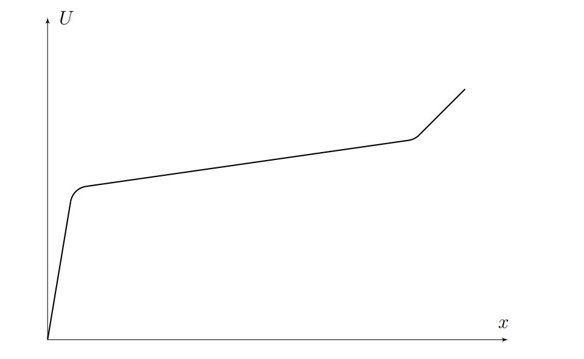
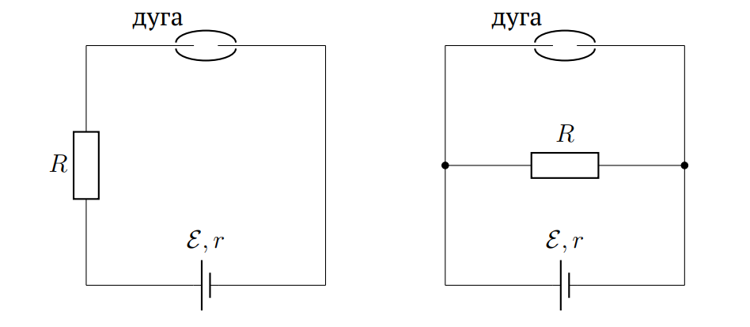
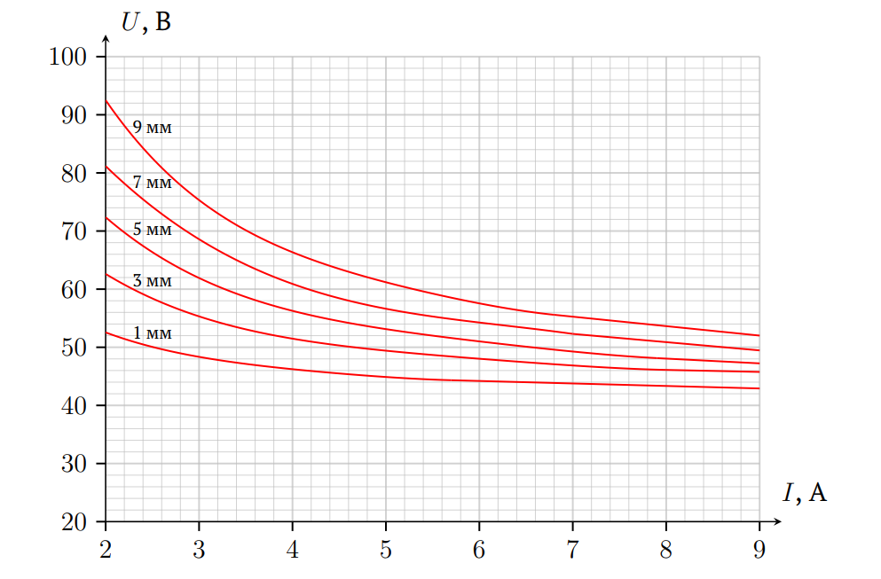

X19 (2019) — English translation
Electrical discharge has captured the imagination of mankind since ancient times, the most impressive being lightning. Many types of electrical discharges are studied at the micro or macro level. In this problem we will consider an electrical arc discharge. An electric arc is an autonomous (self-sustaining) discharge in a gas, characterized by: a very high current density; low voltage drop across the arc; dependence of the arc cross-sectional area on current; nonlinearity of the current-voltage characteristic of the arc The discharge is a quasi-neutral plasma “cord” of radius $R$, in which charged particles produced by gas ionization (mainly electrons) move. Large pressures associated with the magnetic field created by currents in the cord limit its radius. Also, high temperatures of the order of $10000~\text{К}$ are reached in the cord. The graph shows the approximate dependence of the potential on the coordinate along the cord. Complex edge effects lead to near-electrode voltage drops that accumulate over very short distances
The discharge is a quasi-neutral plasma “cord” of radius $R$, in which charged particles produced by gas ionization (mainly electrons) move. Large pressures associated with the magnetic field created by currents in the cord limit its radius. Also, high temperatures of the order of $10000~\text{К}$ are reached in the cord. The graph shows the approximate dependence of the potential on the coordinate along the cord. Complex edge effects lead to near-electrode voltage drops that accumulate over very short distances

First, we will consider the simplest model that allows us to explain the nonlinearity of the arc current-voltage characteristic. Let the current density $j$ be constant over the cross section of the cord; the temperature $T$ and the concentration $n$ of electrons on the axis of the string do not depend on the applied voltage. We take edge effects into account by subtracting a certain constant value $U_0$ from the total applied voltage. Cord length $d$.
In 1902, Hertha Ayrton proposed the following equation for the current-voltage characteristic of an arc: $U=a+b/I$, where $U$ is the potential difference between the electrodes, $I$ is the current strength, $a$ and $b$ are positive coefficients that are functions of the arc length.
Now let's consider the behavior of an arc discharge as an element of an electrical circuit. An arc occurs between two electrodes when they come together and the gas in the space between them becomes ionized. If the electrodes are connected, the arc will disappear. If the electrodes are moved apart again, the arc will appear again. The arc will disappear when the distance between the electrodes exceeds a certain critical value. However, it should be noted that if you simply continuously increase the voltage between the contacts (between which the distance is less than critical), then an arc discharge may occur, but, generally speaking, it may be unstable and disappear with small fluctuations of the current in the circuit. In this part of the problem, the length of the arc gap is kept constant. Next, consider that the arc gap is connected to a generator with emf $\mathcal{E}$ and internal resistance $r$. Stabilization of the discharge mode can be performed using a resistor with resistance $R$. It can be connected either in series or in parallel with the arc gap.

In the case of parallel connection, due to the ambiguity of the current-voltage characteristics, it is difficult to analyze the stability of the discharge. Therefore, further we will consider a serial connection.
Now let's study the dependence of the current-voltage characteristic on the length of the arc gap. It should be noted that the model used in part A does not take into account many factors and in the experiment we may have deviations from the predicted dependencies; Therefore, let us turn to experimental data. The graphs show the dependence of the voltage $U$ on the arc on the current $I$ for different values of the arc length $d$.

The following experiment is carried out with the arc studied at point C1. After obtaining a stable discharge, the length of the arc gap begins to increase, while the EMF in the circuit changes so as to maintain the current through the arc constant and equal to $I=5~\text{А}$. The total ohmic resistance of the circuit (without arc) is $R=2~\text{Ом}$. Define:
Source: https://pho.rs/p/320